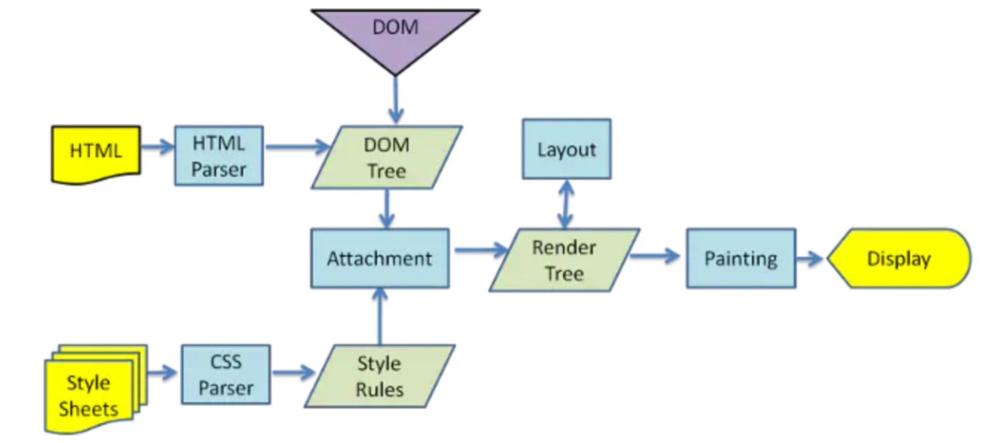

2024-07-14 14:29:04 · YinHao
DOM（Document Object Model，文档对象模型）是一个编程接口，用于表示和操作 HTML 文档。
DOM 将 html 文档的结构化内容（如标签和属性）转换成一个由对象（节点）组成的树状结构，其中每个节点代表文档中的一个元素。
html 文档
<html>
<head>
<title>DOM节点</title>
</head>
<body>
<img src="xx.jpg" alt="xx" />
<h1>喜欢的水果</h1>
<p>DOM应用</p>
</body>
</html>
树型结构
DOM 操作
我们对 DOM 的操作，一般包含操作 DOM 节点内容、操作 DOM 样式、操作 DOM 属性、操作 DOM 事件，还有 DOM 节点的创建、删除、修改、查询、遍历等操作。
下面是一个完整的示例，演示了如何创建一个按钮，添加点击事件，并在点击时更改页面上的文本内容：
<!DOCTYPE html>
<html lang="en">
<head>
<meta charset="UTF-8" />
<title>DOM Manipulation Example</title>
</head>
<body>
<p id="text">Initial text.</p>
<button id="changeTextBtn">Change Text</button>
<script>
// 获取元素
var textElement = document.getElementById("text");
var button = document.getElementById("changeTextBtn");
// 创建新的文本内容
var newText = "Text has been changed!";
// 添加事件监听器
button.addEventListener("click", function () {
// 修改元素的文本内容
textElement.textContent = newText;
});
</script>
</body>
</html>
在这个示例中，我们首先通过 ID 获取了文本元素和按钮元素。然后，我们为按钮添加了一个点击事件监听器，当按钮被点击时，文本元素的内容会被更改为新的文本内容。
浏览器渲染
当我们打开浏览器执行代码时，浏览器渲染引擎，会先解析 HTML 然后生成 DOM 树，与此同时，渲染引擎也会用 CSS 解析器解析 CSS 文档构建 CSSOM 树。接下来，DOM 树和 CSSOM 树关联起来构成渲染树（RenderTree）然后浏览器按照渲染树进行布局（Layout），最后一步通过绘制显示出整个页面。
重排重绘
重绘: CSS 样式改变(例如：visibility，背景色的改变)，浏览器需要根据新的属性进行重新绘制。
重排: 我们对 DOM 的修改引发了 DOM 几何元素的变化，渲染树需要重新计算，重新生成布局，重新排列元素。
单单改变元素的外观，肯定不会引起网页重新生成布局，但当浏览器完成重排之后，将会重新绘制受到此次重排影响的部分。比如改变元素高度，这个元素乃至周边 dom 都需要重新绘制。重绘不一定导致重排，但重排一定会导致重绘。
频繁的重排重绘对浏览器性能影响较大，严重时甚至会出现页面卡顿现象。这句很重要。
我们知道，操作真实 DOM 节点后，浏览器渲染引擎会将结果经过重排、重绘过程显示出来呈现给用户。频繁的重排重绘对浏览器性能影响较大。
在现代大型 web 应用程序开发中，频繁操作 DOM 的情况经常发生，为了提高性能，现代前端框架都引入了虚拟 DOM 技术，优化 web 程序性能。
虚拟 DOM 介绍
虚拟 DOM（Virtual DOM）是一个编程概念，主要用于提高 Web 应用程序的渲染性能。它是由 Facebook 开发的 React 库中的一个关键特性，但这个概念也被其他前端框架和库所采用。
虚拟 DOM 的基本概念：
轻量级对象：虚拟 DOM 是一个 JavaScript 对象，它代表了一个真实的 DOM 节点，但它并不是实际的 DOM 节点。它是一个轻量级的 JavaScript 对象，可以快速地创建和操作。
树形结构：就像实际的 DOM 一样，虚拟 DOM 也是一个树形结构，每个节点可以有子节点。
状态快照：当状态发生变化时，React 会创建一个新的虚拟 DOM 树，这个树是当前状态的快照。
差异比较（Diffing）：React 通过比较新旧虚拟 DOM 树来确定实际 DOM 中哪些部分需要更新。这个过程称为差异比较或 Diff 算法。
高效更新：通过仅更新变化的部分，React 可以避免不必要的 DOM 操作，从而提高性能。
虚拟 DOM 的工作流程：
状态改变：当组件的状态或者属性发生变化时，React 会触发重新渲染。
生成新虚拟 DOM：React 会根据新的数据生成一个新的虚拟 DOM 树。
差异比较：React 会将新的虚拟 DOM 树与旧的虚拟 DOM 树进行比较，找出差异。
最小化 DOM 操作：React 会计算出最小的更新量，然后对实际的 DOM 进行更新。
渲染更新：最后，React 会将计算出需要更新的部分应用到实际的 DOM 上，完成渲染。
虚拟 DOM 的优点：
性能优化：通过减少直接操作 DOM 的次数，可以显著提高应用的性能。
跨平台：虚拟 DOM 使得 React 可以运行在不同的平台上，如 Web、移动应用和桌面应用。
易于调试：由于虚拟 DOM 是 JavaScript 对象，开发者可以更容易地在开发工具中查看和调试组件树。
虚拟 DOM 是现代 Web 开发中一个非常强大和有用的工具，它帮助开发者构建快速、高效且易于维护的 Web 应用程序。
简单理解：虚拟 dom 本质上就是一个普通的 JS 对象，用于描述视图的界面结构，将真实 DOM 节点用 js 对象构造出来。
React 虚拟 DOM 示例
虚拟 DOM（Virtual DOM）是一个 JavaScript 对象，它模拟了实际的 DOM 节构。以下是使用 React 来创建一个简单虚拟 DOM 的示例：
// 假设我们有一个简单的组件，它是一个函数组件
function MyComponent(props) {
return (
<div>
<h1>{props.title}</h1>
<p>{props.text}</p>
</div>
);
}
// 创建一个组件实例，并将props传递给它
const element = (
<MyComponent title="Hello Virtual DOM" text="This is a simple example." />
);
// React会将这个组件实例转换为一个虚拟DOM对象
// 这个虚拟DOM对象是一个轻量级的JavaScript对象，不是实际的DOM元素
// 假设我们使用React的渲染函数来将虚拟DOM渲染到实际的DOM中
// 这个过程通常在React的内部进行，以下是模拟这个过程的伪代码
function render(element) {
const virtualDOM = {
type: "div",
props: {
children: [
{
type: "h1",
props: {
children: "Hello Virtual DOM",
},
},
{
type: "p",
props: {
children: "This is a simple example.",
},
},
],
},
};
// 将虚拟DOM转换为实际的DOM节点
function createDOM(virtualNode) {
// 根据虚拟DOM的类型创建DOM元素
const element = document.createElement(virtualNode.type);
// 设置元素的属性
Object.keys(virtualNode.props).forEach((prop) => {
if (prop !== "children") {
element[prop] = virtualNode.props[prop];
}
});
// 递归创建子节点
if (virtualNode.props.children) {
virtualNode.props.children.forEach((child) => {
element.appendChild(createDOM(child));
});
}
return element;
}
// 使用createDOM函数创建实际的DOM节点
const domElement = createDOM(virtualDOM);
// 将创建的DOM元素插入到页面中
document.body.appendChild(domElement);
}
// 调用render函数，将虚拟DOM渲染到页面中
render(element);
在这个示例中，我们定义了一个简单的函数组件 MyComponent，它接受 title 和 text 作为 props，并返回一个包含 h1 和 p 标签的 div 元素。然后，我们创建了一个组件实例 element，并将 props 传递给它。
React 内部会将这个组件实例转换为一个虚拟 DOM 对象，这个对象是一个轻量级的 JavaScript 对象，它模拟了实际的 DOM 节构。然后，React 会使用一个类似于 createDOM 的函数来将虚拟 DOM 转换为实际的 DOM 节点，并将其插入到页面中。
请注意，这个示例是一个简化的版本，用于说明虚拟 DOM 的概念。在实际的 React 应用中，虚拟 DOM 的创建、比较和更新是由 React 的内部机制自动处理的，开发者不需要手动编写这些代码。